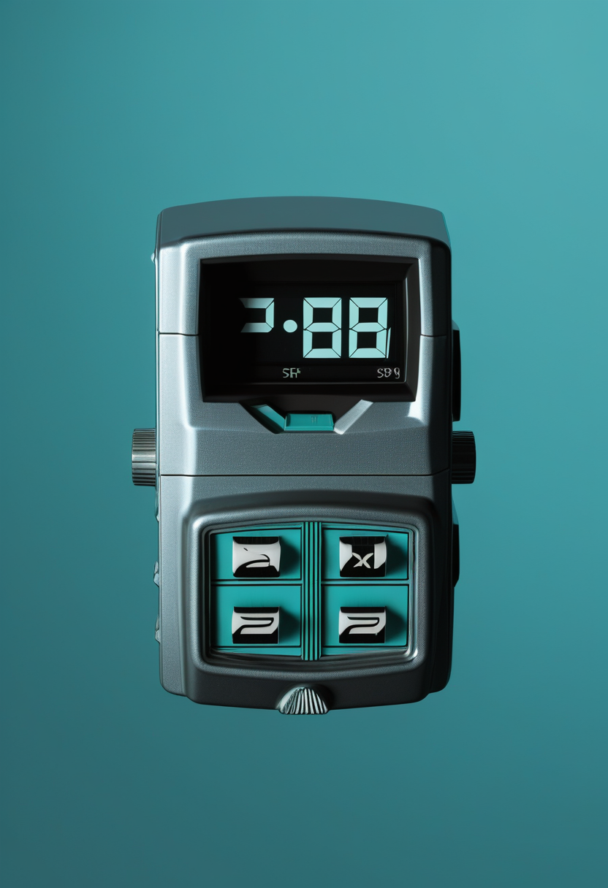
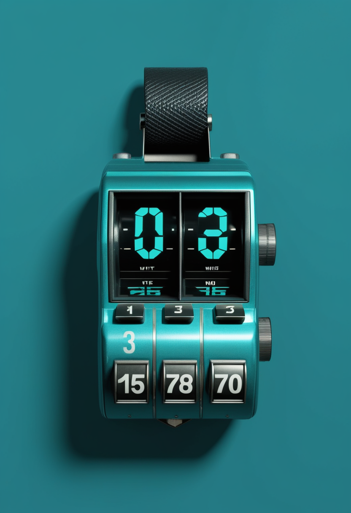
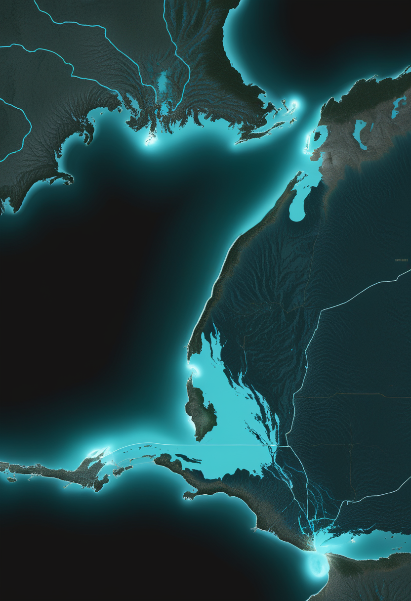
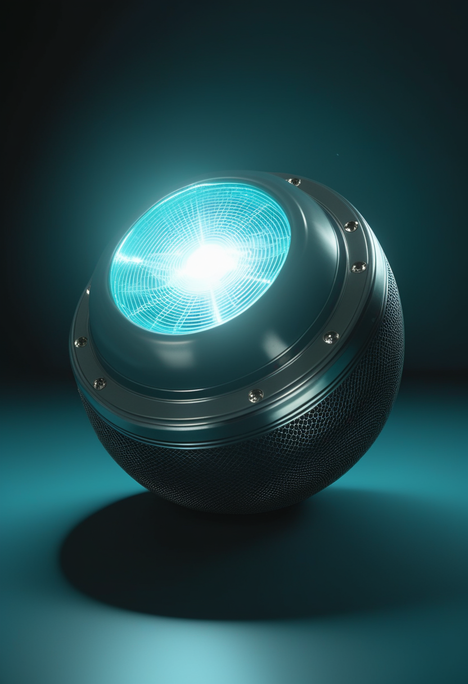
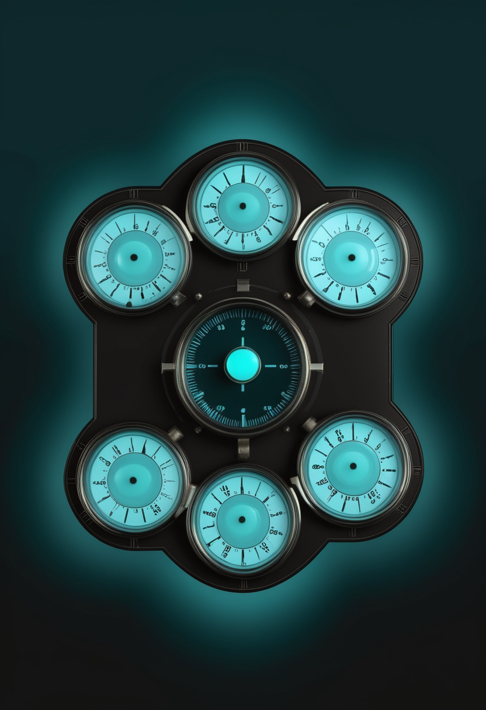

土曜日の便り。米CDCが9月24日に更新した集計で、2026年の麻疹確定例は3,659例になった。前週(9月17日時点)の3,471例から188例、5.4%の増加である(本紙検算)。前号まで持ち越してきた3,471例という数字は、流行が止まっていたのではなく、集計の更新が止まっていただけだった。命の章は、世界の新生児のおよそ7%しかSMAのスクリーニングを受けていないという統計に、31か国・62か国・39か国という内訳が加わったこと、そして治療が承認されてからの10年が何を残したかを問う総説を伝える。自由の章は、中国の医療保険当局が初めて開いた国家級のBCI大会、電極を増やすことと使い手に届く速さは同じ曲線を描かないという指摘、そして埋め込んだ機器が体の一部になったとき同意はどうなるかを問う論文を扱う。基盤の章は麻疹の更新のほか、北キブ州の治療センターが満床になったエボラ、東京都に続いて千葉県が注意報を出したインフルエンザを届ける。畏敬の章は、中国天眼FASTが見つけた最軽量の二重中性子星、高輝度化へ動き出したCERNのLHC、音の量子跳躍を初めてとらえたスタンフォードの実験である。美の章は、意識あるAIを作るべきかを問う論考、神経科学の理論から意識の指標を導く試み、意識の7つの定義を並べる整理という、測る前に定義し、定義する前に問い直す三層の議論を並べる。
米CDCが9月24日に更新した集計で、2026年の麻疹確定例は3,659例になった。前週(9月17日時点)の3,471例から1週間で188例、5.4%の増加である(本紙検算)。内訳は47管轄からの報告3,642例と、海外からの訪問者17例(3,642+17=3,659、本紙検算)。今年新たに報告されたアウトブレイクは40件で、確定例の95%(3,478例、本紙検算)が集団発生に関連する。2000年に排除を宣言して以来、すでに最悪の年である。CDCは9月23日、サイトの計上で2026年初の麻疹関連死1件を確認した(本紙9/24号既報)。一方でペンシルベニア州は4人の死亡を公表しており、州の報告とCDCの全国計上がどう対応するかは、今号でもなお確認されていない。本紙は前号まで、止まった3,471例という数字を持ち越してきた。止まっていたのは集計であって、流行そのものではなかった。呼吸器ウイルスの季節に入り、症例数はさらに大きく増えると見込まれている。集計が動くたびに数字を正しく読み直すこと自体が、この時期にできる備えである。
Nature Reviews Neurology 22巻(533〜534ページ)の論考「Newborn screening for spinal muscular atrophy: time is motor neuron」は、新生児スクリーニングの導入がSMAの診断の枠組みを変えた一方、導入の遅れがSMAの人々のあいだに不平等を生んでいると指摘する。運動ニューロンの損傷は通常元に戻らないため、早期の診断と治療が重い障害を防ぐ鍵になる。本紙9/19号は、世界でSMAの新生児スクリーニングを受けている新生児がおよそ7%にとどまると伝えた。その内訳が、世界調査(Journal of Neuromuscular Diseases)で判明している。2023年時点でスクリーニングを実施していたのは31か国。少なくとも1剤の疾患修飾療法が使える国は62か国、3剤すべてが使える国は39か国にとどまる。2028年のスクリーニング率は約18%と予測されている。薬がある国の数と、検査で早期に見つけられる国の数は、別々に増えている。
Nature Reviews Neurology 22巻(549〜563ページ)の総説「Ten years of disease-modifying therapy in spinal muscular atrophy: lessons learned and future directions」は、2016年に最初の薬が承認されてからの10年を振り返る。ヌシネルセン、オナセムノゲン アベパルボベク、リスジプラムの3つの治療は、重症のI型を含むすべての病型で自然経過を劇的に変え、臨床試験と実臨床の両方で安全性と有効性のデータが急速に積み上がった。一方で、実臨床の証拠、新たに現れた表現型、新しい治療戦略に応じて、分野は変わり続けている。総説は、長期転帰、新生児スクリーニングの拡大、そして治療を順に重ねる逐次療法や組み合わせる併用療法の登場がもたらす課題と機会を検討する。本紙が伝えてきたISEMBYLD(SMN2標的治療への上乗せ、9月11日FDA承認)やsalanersenのSTELLAR-2試験(遺伝子治療後の上乗せ)は、まさにこの「重ねる治療」の具体例にあたる。
治療の10年が示したのは、薬の効果が「いつ始めるか」で大きく変わるという一点だった。だから次の課題は、世界の新生児の7%にとどまるスクリーニングを広げることと、単剤から「重ねる治療」への移行を費用と証拠の両面で支えることになる。31か国・62か国・39か国という数字の差は、検査を広げる仕事と、薬を届ける仕事が、別々の速さで進んでいることを映している。
中国国家医療保障局(医保局)と浙江省人民政府が共催する「2026全球脳機接口×医保創新場景大賽」の決勝が9月21〜22日に杭州で行われ、9月23日に閉幕した。BCIと医療保険の応用場面に焦点を当てた国内初の国家級大会で、9部門に251件が決勝へ進んだ。部門は課題競技と場面応用に分かれ、場面応用では健康監視と早期警告、機能リハビリと知的介護を扱い、高齢者、障害のある人、精神疾患の患者を対象とする。報道は、支払者である医保が需要側からBCIの実用化を後押しし、研究室から臨床への「最後の1キロ」を埋めようとしていると伝えている。本紙9/25号は、中国が製品承認に続きAI学習用データの標準(YY/T 2029—2026)を公布したと伝えた。今日は、支払いの側が動いた。
本紙9/23号は、SynchronのStentrode(電極16)とNeuralinkのN1(電極1,024)のあいだに64倍の開きがあると書いた。Boxuan Jiang氏のarXiv論文「More Electrodes, Faster Minds? Rethinking Bandwidth in Brain-Computer Interfaces」(2607.24820)は、その差がそのまま使い手の差になるとは限らないと論じる。高帯域のBCIが損傷した経路を迂回し、意思疎通や操作を改善しうることを認めたうえで、「インターフェースの帯域幅」「復号できる神経状態」「本人が使い、確かめ、表現できる情報」は区別すべきだと指摘する。インターフェースの容量、神経情報、人にとって意味のある入出力は、それぞれ別の曲線で伸びる可能性があるという。電極数の勝負に見えていた比較の裏に、もう一段別の物差しが要るという指摘である。
BMC Medical Ethics(2026年6月23日)の論文「Consent in flux: when brain-computer interface embodiment undermines informed consent」は、長期の侵襲型BCIで、当初は試験後の機器摘出に同意していた参加者が、やがて機器に機能的に依存し、自分の身体の一部として感じるようになる場合を扱う。拡張された認知と変容的経験の理論、BCI利用者の体験に関する質的研究、ニューロライツの議論と中国の規制動向を踏まえ、埋め込み後の統合が摘出への当初の同意の道徳的な効力を弱めうるかを検討した。論文は、既存の倫理指針が埋め込み機器からの「撤退」をどう運用するかを定めておらず、参加者の意向が変わる可能性にも触れていないと指摘する。中国が2026年1月に出したBCI臨床研究の学際的倫理審査指針も、初回審査の手続きは定めるが、埋め込み後の継続審査や摘出の指針はないという。
本号の3本は、BCIの「その後」を扱う。医保局の大会は誰が支払うかを、帯域幅の論文は増えた電極が本当に使い手に届くかを、同意の論文は埋め込んだ後に誰がやめる権利を持つかを問う。性能の数字が伸びるほど、支払い・実効性・撤退という三つの出口の設計が問われる。

米CDCの9月24日時点の集計では、2026年の麻疹確定例は3,659例で、前週から188例増えた(5.4%増、本紙検算)。内訳は47管轄からの報告3,642例と、海外からの訪問者17例である。今年の新規アウトブレイクは40件、確定例の95%(3,478例)がアウトブレイク関連だった。CDCが9月23日にサイトで計上した2026年初の麻疹関連死1件(本紙9/24号既報)について、州名は公表されておらず、4人の死亡を発表しているペンシルベニア州との対応はなお確認されていない(要確認)。呼吸器ウイルスの季節の始まりとともに、症例数はさらに大きく増えると見込まれている。
Reutersは9月25日、北キブ州が新たなエボラの中心になったと報じた。同州のキタトゥンバ・エボラ治療センターでは今週、29床すべてが埋まった。国境なき医師団(MSF)の現地責任者ステファニー・ホフマン氏は「この2週間で非常に急な増加を見ている」と述べた。本紙9/24号は、直近21日間で北キブの感染が73%増え、同州の致死率が60.6%(全国平均48%を上回る)に達したと伝えた。住民や医療者への取材では、資金と熟練人員の不足に加え、対応チームへの根深い不信が封じ込めを難しくしており、患者が医療施設を避けているという証言もある。政府データでは9月22日時点で全国の確定7,820例・死亡3,779人(致死率約48.3%、本紙計算)で、ECDCの9月22日公表(9月21日までのデータ)7,773例・3,759人から+47例・+20人(本紙計算、集計元が異なる点に注意)。

千葉県は9月25日、2026年第38週(9月14〜20日)のインフルエンザ定点当たり患者報告数が14.36となり、国の注意報基準値を超えたとして注意報を発令した。本紙9/25号で伝えた東京都(9月17日に注意報基準超え、定点当たり9.53)に続き、首都圏で季節外れの流行が広がっている。厚生労働省の全国の第38週の数値は本号の締め切りまでに取得できなかった(前号の第37週は全国5.54)。
3本はどれも、先週「止まって見えた」数字が動いた話である。麻疹は集計が更新されて188例増え、エボラは北キブの病床が満床になり、インフルエンザは東京に続いて千葉が基準を超えた。北キブの致死率6割超と「患者が施設を避けている」という証言は、検出の遅れが死亡を押し上げている可能性を示す(本紙の推測)。日本の読者にとっての行動は前号と同じで、インフルエンザの予防接種を例年より早めに考える根拠が強まった。
中国科学院国家天文台の韓金林研究員が率いるFASTの銀河面パルサー探査チームは、公転周期が極めて短く、既知で総質量が最も軽い二重中性子星系PSR J1856-0039を発見した。成果は9月15日付のPhysical Review Lettersに掲載された。公転周期は2.36時間で既知の二重中性子星で2番目に短く、総質量は2.488太陽質量で過去最軽量。観測できるパルサーが約1.30太陽質量、伴星の中性子星が約1.19太陽質量である。複数の観測結果が一般相対性理論を精密に検証した。軌道傾斜角が極めて小さく周期が短いことから、中性子星の自転が時空を引きずる「慣性系の引きずり」効果を検出する好条件にあるという。
CERNは、第3期長期停止(LS3)の作業として、LHCの最初の磁石接続部をATLAS実験があるPoint 1で切断し、高輝度LHC(HL-LHC)に向けた交換作業を正式に始めた。対象は実験装置の両側で衝突直前にビームを絞り込む「内側トリプレット」(3台の四極磁石)で、現行品は2005〜2007年に設置された。新しい磁石はニオブチタンに代えてニオブスズの超伝導コイルを使い、ScienceDailyによれば磁場は約40%強い。ビームをより細く絞れるため、ATLASとCMSが解析できる衝突が大幅に増える。新しい四極磁石の最初の1台は2029年初めにトンネルへ搬入される予定で、全体で16台のクライオスタットと28のクライオ組立体を据え付ける。LS3は最長4年続く見込みである。

スタンフォード大学のAmir Safavi-Naeini氏らは、微小な機械共振器のなかで、振動の量子である単一のフォノンが突然消える「量子跳躍」を実時間で直接とらえた。論文「Quantum jumps of sound」はScience 393巻6817号に掲載された。超伝導量子ビットが共振器の量子状態をすぐには壊さずに繰り返し測定し、フォノン1個から0個への跳躍を記録した。装置は2ミリ秒の間に数百回の測定を行って跳躍の瞬間を特定し、測定は約99%が量子非破壊だった。量子跳躍はこれまでイオンや光子で観測されてきたが、機械的な振動(音)で個々のフォノンの跳躍を実時間で示したのは初めてとされる。量子計算や量子センシングへの応用が期待される。
本号の3本は、いずれも「極限の精度」の話である。FASTは2.36時間で回る軽い中性子星の対で一般相対性理論を試し、CERNは磁場を約4割強めて衝突を増やす準備に入り、スタンフォードはフォノン1個の消失を2ミリ秒の窓でとらえた。中国の一次ソース(国家天文台)と欧州(CERN)、米国(スタンフォード)がそろった号でもある。
ウプサラ大学のKathinka Evers氏とMichele Farisco氏の論文「Is conscious AI desirable?」が、9月17日にBehavioral and Brain Sciencesでオンライン公開された。両氏は、人間が作る意識あるAIは、とりわけ人間の本性を映す場合に極めて危険になりうるとし、その望ましさと安全性に懐疑を示す。また意識あるAIは人間の意識と大きく異なり、検出も理解も意思疎通もできないものになりうると論じる。関連する解説で両氏は、意識ある機械を作りたいという欲求が、生物としての限界を超えたい、「創造主になりたい」という人間の古い衝動に根ざすと述べ、Evers氏は「暴力と選択的な共感の歴史を持つ人間を考えれば、AIが善意的で価値観がそろっていると信じるのは素朴だ」と語っている。

Patrick Butlin氏、Robert Long氏、David Chalmers氏、Yoshua Bengio氏らによる「Identifying indicators of consciousness in AI systems」が、Trends in Cognitive Sciences 30巻6号(488〜501ページ、2026年)に掲載された。既存または将来の神経科学的な意識理論から意識の指標を導き、それを個々のAIシステムの評価に使う方法を示す。背景には、AIが脳の意識に関わる特徴を再現する力を強めるなかで、意識を過大にも過小にも帰属させる危険があるという認識がある。答えの出ない「意識はあるか」という問いを、測れる指標の問題へ置き換える試みである。
Cognitive Systems Researchの論文「From the mechanics of consciousness to the consciousness of machines. Seven approaches to 'consciousness' and their implications for AI research」(2026年)は、意識の7つの捉え方を並べる。「私」と言う者の言語ゲームに参加する能力、感覚で知覚し行動する能力、社会的な生物の構造的な結びつきから生じる自己意識、再帰(re-entry)、嘘をつく能力、身体的な現象などである。そのうえで、それぞれがニューラルネットワーク、身体化された認知、自己参照的な処理によって人工システムで実現できるかを検討する。どの定義を採るかで「機械は意識を持ちうるか」の答えが変わることを示す整理である。
3本を並べると、AI意識の議論が三層に分かれて見える。定義の層(7つの捉え方)、測定の層(神経科学からの指標)、そして規範の層(そもそも作るべきか)である。測る前に「作るべきか」を問い直すBBSの論文は、複製できるかと複製すべきかが別の問いであることを思い出させる。
土曜日の便り。米CDCが9月24日に更新した集計では、2026年の麻疹確定例は3,659例となり、前週から188例、5.4%増えた。前号まで止まって見えていたのは、流行ではなく集計の更新だった。DRCのエボラは北キブ州の治療センター29床が満床になり、全国確定例は7,820例(9月22日時点)に増えた。日本では東京都に続いて千葉県がインフルエンザ注意報を出した。命の章は、世界のSMA新生児スクリーニング普及率7%の内訳(31か国が実施、62か国が薬にアクセス可能)と、治療承認から10年の総説を伝えた。自由の章は、中国医療保険当局の初のBCI大会、電極数と使い手の速さは同じ曲線を描かないという指摘、埋め込み型BCIの摘出をめぐる同意の論文を扱った。畏敬の章は、FASTが見つけた最軽量の二重中性子星、高輝度化へ動き出したCERNのLHC、音の量子跳躍の初観測を届けた。美の章は、意識あるAIを作るべきかを問う論考、神経科学からの意識の指標、意識の7つの定義という三層の議論だった。
では、また明日の朝に。 — JaH